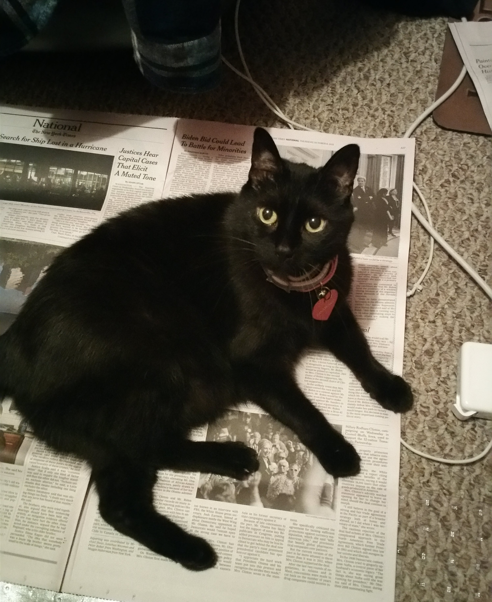
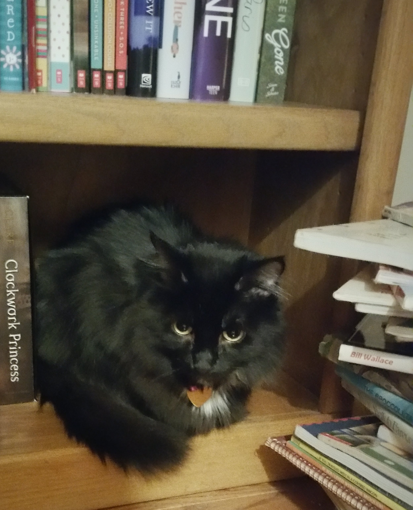
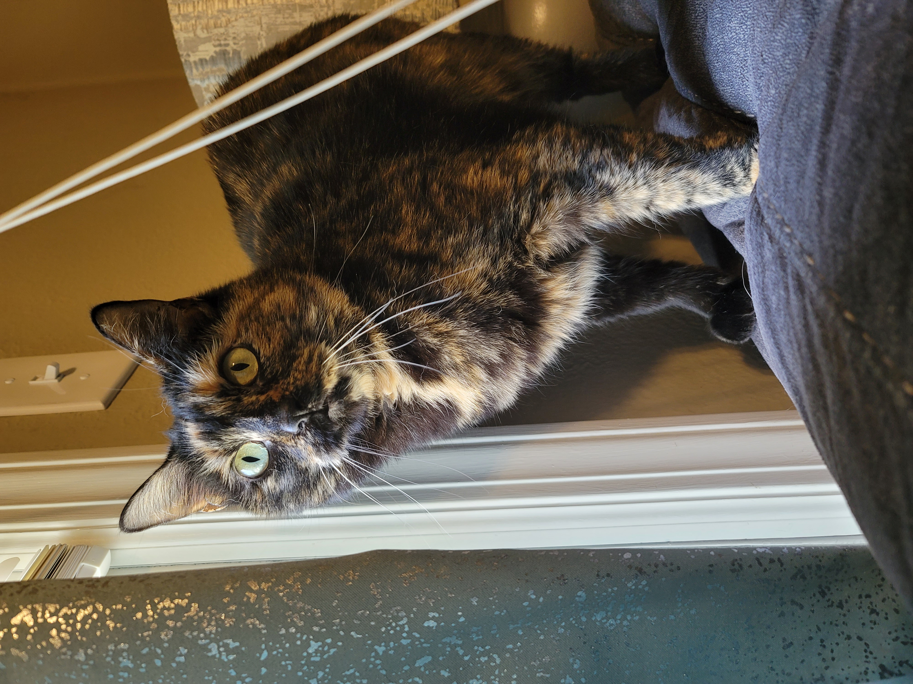
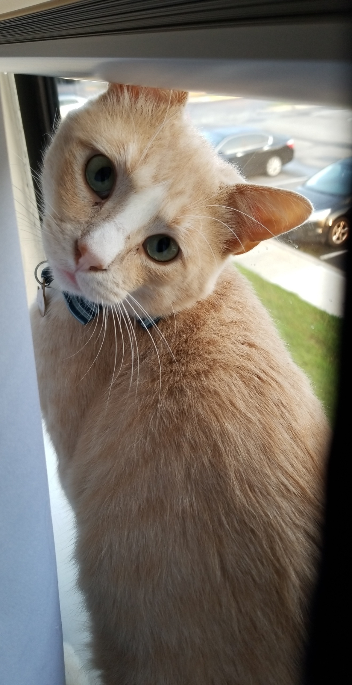

Cats are Amazing Creatures
“There are two means of refuge from the miseries of life: music and cats.” Albert Schweitzer
Louie
As a very small child, I was enamored with all animals - but especially with cats. When I was about three or four, my father found a litter of abandoned kittens in backyard. He put them all in a box and showed me the babies. I was overjoyed! My dad had gotten me a BOX of kittens.
Unfortunately, this was not entirely accurate. He negotiated me down from the whole box, to just one of the kittens. Not the best deal I've ever made, but hey. The kitten that I chose was white and orange. I named him Louie and I adored him. It is unfortunate that Louie did not reciprocate my feelings, but that hardly mattered to young Megan.
Snowball
Somewhere around age 9, we adopted Snowball. It started as an innocent trip to the pet store to buy some fish, but somehow resulted in buying a cat instead. My little sister was 3 or 4 years old at the time and thought “Snowball” was the best name ever for a cat. It did not matter to her that this cat was entirely black. I tried my best to convince her of other names like Pepper, but she held her ground and Snowball stuck.
Snowball was a very sweet cat with a purr that sounded like an engine. She accompanied me to college when I moved out of the dorms. She was an excellent study and snuggle partner. Unfortunately, she became quite sick the summer after I graduated and passed away.
Frosty
About a year or so after we adopted Snowball, we adopted Frosty. This cat adoption was not due to an impulsive decision within a pet store though. My first cat, Louie, ran away about a month or so before we adopted Frosty. Despite Louie not particularly liking anyone (including myself), I was quite upset by the event. My parents suggested perhaps adopting a kitten would be a good distraction (and it was). We kept with the black cat with a winter-themed name and named the kitten Frosty. She was a very loving cat with a very quiet purr. She passed away at the ripe old age of 15.
Zelda
The year after I graduated from college, I adopted Zelda from an adoption group called Kitty Cat Connection. She loves chasing feathers, making biscuits, and laying on her favorite people (preferably on their chest). Whenever she sees someone she likes, she immediately begins purring up a storm.
Leo
I moved into my first apartment in 2018 and promptly adopted Leo as a friend/sibling for Zelda. Leo adored Zelda and they spent a lot of time playing and snuggling each other. He was an incredibly loyal cat who would often wait by the front door for his humans to return. About a year after his adoption, the vet discovered he had the feline immunodeficiency virus (also referred to as FIV). This is essentially kitty HIV. While some cats with FIV can live long life spans without issues, this was not the case for Leo. He passed in January of 2020, after a short but happy life.
Smudges

I adopted Smudges as a kitten in February of 2020 from an adoption organization called Kitty City Kansas in Lenexa, Kansas. While she is a small gremlin who enjoys knocking things off tables and stealing plastic straws, she is a very sweet cat. She is also very food motivated. She knows how to shake for a treat and very much enjoys puzzles with treats hiding in them.
Stella

Last, but not least, we have Stella. In October of 2020, on a trip to the mailboxes within the apartment complex I lived at, I saw a very skinny, young stray cat crying in the bushes. I gave her food and she followed me back to my apartment. I took her to the vet to check and see if she had a chip, but no such luck. Based on how skinny she was and how her fur looked, the vet determined it was likely she was a stray. I officially adopted her and she's thrived as indoor cat ever since. Stella enjoys sleeping in boxes, rolling about in catnip, and cuddling with her sisters.